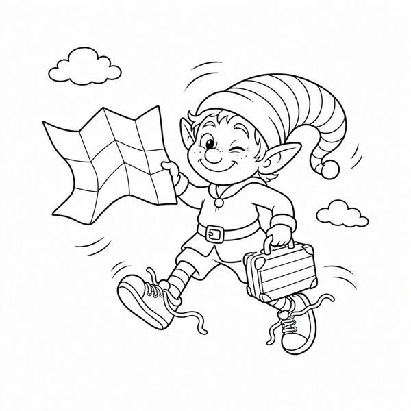

Book materials
Murphy's Law: Whoever Loses Plays Again!
Here you'll find all the printables and mini games promised in the book. Every chapter has its own QR code, but you can open them from here too.

Here you'll find all the printables and mini games promised in the book. Every chapter has its own QR code, but you can open them from here too.